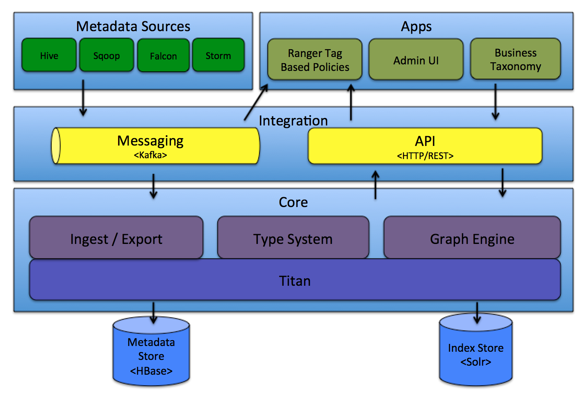

Atlas High Level Architecture - Overview

The components of Atlas can be grouped under the following major categories:
Core
Atlas core includes the following components:
Type System: Atlas allows users to define a model for the metadata objects they want to manage. The model is composed of definitions called ‘types’. Instances of ‘types’ called ‘entities’ represent the actual metadata objects that are managed. The Type System is a component that allows users to define and manage the types and entities. All metadata objects managed by Atlas out of the box (like Hive tables, for e.g.) are modelled using types and represented as entities. To store new types of metadata in Atlas, one needs to understand the concepts of the type system component.
One key point to note is that the generic nature of the modelling in Atlas allows data stewards and integrators to define both technical metadata and business metadata. It is also possible to define rich relationships between the two using features of Atlas.
Graph Engine: Internally, Atlas persists metadata objects it manages using a Graph model. This approach provides great flexibility and enables efficient handling of rich relationships between the metadata objects. Graph engine component is responsible for translating between types and entities of the Atlas type system, and the underlying graph persistence model. In addition to managing the graph objects, the graph engine also creates the appropriate indices for the metadata objects so that they can be searched efficiently. Atlas uses the JanusGraph to store the metadata objects.
Ingest / Export: The Ingest component allows metadata to be added to Atlas. Similarly, the Export component exposes metadata changes detected by Atlas to be raised as events. Consumers can consume these change events to react to metadata changes in real time.
Integration
Users can manage metadata in Atlas using two methods:
API: All functionality of Atlas is exposed to end users via a REST API that allows types and entities to be created, updated and deleted. It is also the primary mechanism to query and discover the types and entities managed by Atlas.
Messaging: In addition to the API, users can choose to integrate with Atlas using a messaging interface that is based on Kafka. This is useful both for communicating metadata objects to Atlas, and also to consume metadata change events from Atlas using which applications can be built. The messaging interface is particularly useful if one wishes to use a more loosely coupled integration with Atlas that could allow for better scalability, reliability etc. Atlas uses Apache Kafka as a notification server for communication between hooks and downstream consumers of metadata notification events. Events are written by the hooks and Atlas to different Kafka topics.
Metadata sources
Atlas supports integration with many sources of metadata out of the box. More integrations will be added in future as well. Currently, Atlas supports ingesting and managing metadata from the following sources:
The integration implies two things: There are metadata models that Atlas defines natively to represent objects of these components. There are components Atlas provides to ingest metadata objects from these components (in real time or in batch mode in some cases).
Applications
The metadata managed by Atlas is consumed by a variety of applications for satisfying many governance use cases.
Atlas Admin UI: This component is a web based application that allows data stewards and scientists to discover and annotate metadata. Of primary importance here is a search interface and SQL like query language that can be used to query the metadata types and objects managed by Atlas. The Admin UI uses the REST API of Atlas for building its functionality.
Tag Based Policies: Apache Ranger is an advanced security management solution for the Hadoop ecosystem having wide integration with a variety of Hadoop components. By integrating with Atlas, Ranger allows security administrators to define metadata driven security policies for effective governance. Ranger is a consumer to the metadata change events notified by Atlas.